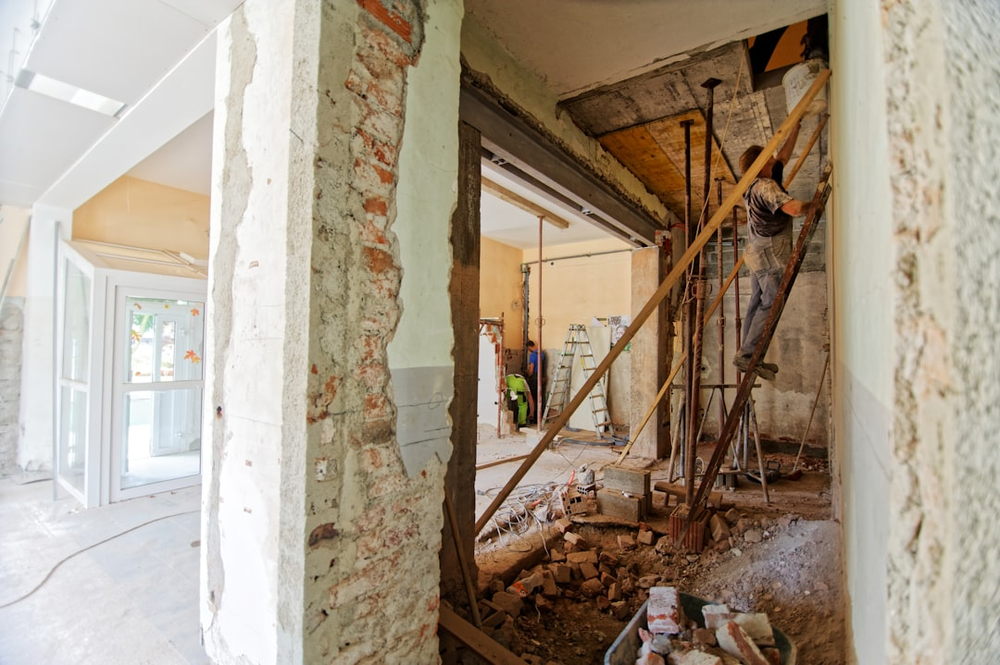

Bathroom renovations in Camberwell typically cost between $10,000 and $80,000 or more, depending on scope. A small bathroom refresh or ensuite sits around $10,000 to $25,000, a full mid-range renovation runs $15,000 to $35,000, and luxury rebuilds start near $50,000. Labour makes up 40 to 60 percent of the total, and heritage homes often add further cost.
For local buyers, bathroom renovation cost camberwell and the figures vary widely once you factor in scope, fixtures, and the age of the home.
Bathroom Renovation Cost Camberwell Explained
Camberwell sits among Melbourne's more established inner-east suburbs, and its housing stock skews heavily toward Federation and Edwardian homes. That period character is a large part of why local renovation costs can sit above a generic Melbourne average. Older plumbing runs, non-standard wall cavities, and heritage-sensitive finishes all add time and labour to a project that would be more straightforward in a newer build.
For a fuller breakdown of what drives pricing in a heritage-heavy market like this one, the bathroom renovation camberwell guide covers the specifics of working with period architecture in more depth than a general cost article can.
Cost by Project Type
Renovation cost is largely a function of scope. A small bathroom or ensuite refresh, focused on updated fixtures and a fresh layout within the existing footprint, generally lands between $10,000 and $20,000 for a small bathroom or $10,000 to $25,000 for an ensuite. A complete strip-out and rebuild, including new waterproofing, plumbing, tiling and fixtures, typically runs $15,000 to $35,000. At the top end, luxury upgrades with freestanding baths, heated flooring and custom joinery can exceed $80,000.
- Small bathroom or ensuite refresh: roughly $10,000 to $25,000
- Mid-range full renovation: roughly $15,000 to $35,000
- Luxury bathroom renovation: from around $50,000, often $80,000 or more
Labour typically accounts for 40 to 60 percent of the total bill, which is why layout changes that require moving plumbing or structural work tend to push a quote toward the higher end of its bracket.
What Compliance Adds to the Bill
Bathroom work in Victoria is not simply a matter of picking tiles and tapware. Waterproofing is expected to meet AS 3740:2021, the Australian Standard governing wet area membranes, and any domestic building work over $10,000 requires a Registered Building Practitioner under Victorian rules. Projects valued above $16,000 also require Domestic Building Insurance to protect the homeowner if the builder cannot complete the job.
Licensed plumbers handle the wet works and licensed electricians handle any wiring, both of which are separate line items most homeowners don't anticipate when they first budget for a project. Building permits are also generally required where structural or plumbing changes are involved, adding administrative time even on a modest job.
Renovating a Federation or Edwardian Bathroom
Heritage homes bring their own cost pressures. Original wall cavities are often narrower than modern standards allow, floor levels can be uneven, and existing plumbing may need substantial rework before new fixtures can be installed. Where a property carries a heritage overlay, finishes may also need to be sympathetic to the period, which limits material choice and can extend the design phase.
None of this means a heritage bathroom is unworkable, only that it needs a tradesperson experienced with older housing stock rather than a standard project template. Getting quotes from specialists who list Federation or Edwardian experience specifically is a reasonable way to filter for this.
Timeframes to Budget Around
Once a contract is signed, a standard bathroom renovation generally takes 2 to 4 weeks for the construction phase itself. Small bathrooms can sometimes finish in 2 to 3 weeks, while luxury renovations involving structural changes take longer. Before construction starts, allow a further 2 to 6 weeks for planning, design and permit approvals where they are required, particularly for heritage properties where council sign-off can add extra steps.
Building this planning window into your budget timeline avoids the common mistake of assuming the renovation clock starts the day you sign a contract.
- Define the scope. Decide whether the project is a refresh, a full rebuild, or a luxury upgrade, since scope is the main driver of cost.
- Check compliance requirements. Confirm whether a building permit, AS 3740:2021 waterproofing, or Domestic Building Insurance applies to a project of that value.
- Budget for the planning window. Add 2 to 6 weeks for design and permit approval ahead of the 2 to 4 week construction phase.
- Get comparable quotes. Request fixed-price quotes from Registered Building Practitioners so pricing can be compared like for like.
| Project type | Typical cost | Notes |
|---|---|---|
| Small bathroom refresh | $10,000 - $20,000 | Layout largely unchanged |
| Ensuite renovation | $10,000 - $25,000 | Space-efficient fixtures |
| Full bathroom renovation | $15,000 - $35,000 | Strip-out and rebuild |
| Luxury bathroom upgrade | $50,000 - $80,000+ | Premium finishes, custom joinery |
Common questions
Why do bathroom renovations cost more in Camberwell than other Melbourne suburbs? Camberwell's high proportion of Federation and Edwardian homes means more projects involve heritage-sensitive design, older plumbing, and non-standard wall cavities, all of which add labour and time compared with a newer build.
Is a building permit always required for a bathroom renovation? Not always, but any structural or plumbing changes generally require one, and any domestic building work over $10,000 in Victoria requires a Registered Building Practitioner.
How much of the total cost is labour? Labour typically makes up 40 to 60 percent of a bathroom renovation's total cost, which is why layout changes involving plumbing relocation tend to push a quote higher.
This guide covers indicative bathroom renovation costs, compliance requirements and timeframes for Camberwell and the wider inner-east Melbourne market.